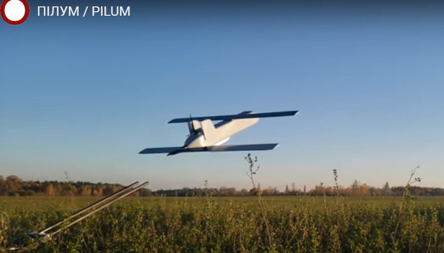
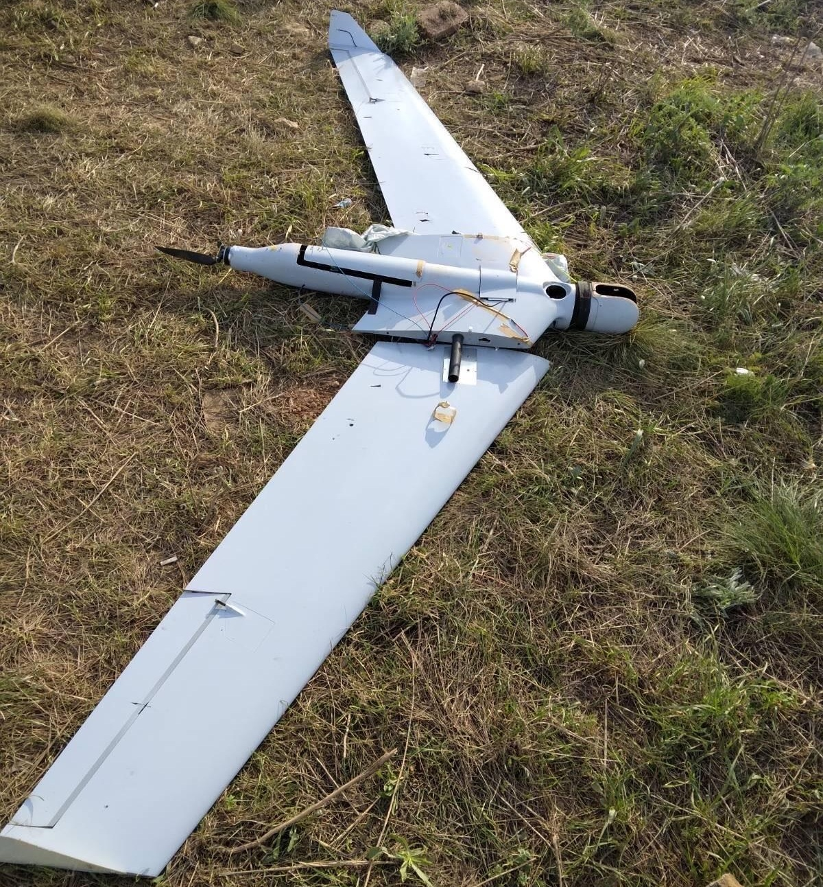

Які дрони вітчизняного (і не лише) виробництва застосовує ЗСУ? Що їм може протиставити країна-агресор? Про це читайте в нашому матеріалі.
Перші українські дрони з’явилися у 2014 році
Перші українські БПЛА з’явилися після початку війни на Донбасі. Для їх створення залучали спеціалістів з авіамодельного спорту, волонтерів і військових.
З того часу дрони багато разів вдосконалювали, завдяки чому вони ставали автономнішими та розумнішими. Усе це робилося для того, аби покращити їхні льотні характеристики. У якості прикладу можна навести модифіковану модель дронів PD-2 (Ukrspecsystems), які базуються на гібридній платформі VTOL. Вона дозволяє їм злітати та приземлятися вертикально, а також підійматися в небо з нерухомим крилом і шасі (це робиться за 15 хвилин). Тобто без будь-яких зусиль і підручних матеріалів змінюється зліт і посадка безпілотника, його розмах крил, витривалість, злітна маса та вага корисного навантаження. Вони можуть злітати з п’ятачка та сідати на обмежений простір. Ці моделі часто використовують для гірничих робіт, повітряного знімання та картографії населених пунктів.
PD-2 – це безпілотник-конструктор, модель якого можна за бажанням легко змінити. Він розвиває максимальну швидкість до 140 км/год. Дроном керують з наземної станції управління, він має сучасне ПЗ.
Іншим прикладом є безпілотні літальні апарати від компанії Skyeton Raybird. Вони мають інжекторний двигун та здатні підніматися в повітря за допомогою катапульти. Максимальна швидкість дронів становить 110 км/год, максимальна висота польоту – до 3,5 км.
PD-2 та Raybird – це одні з найкращих дронів в Україні, які здатні довго триматися в повітрі (від 8 до 28 годин). Raybird навіть використовують у Перській затоці для моніторингових місій і щоб забезпечувати рух кораблів.
Як українські коптери захищені від ворожих засобів РЕБ?
Україна самостійно виготовляє корпуси та частину електроніки для коптерів. У перших версіях безпілотного обладнання використовували доступні контролери та програмне забезпечення. Згодом їх модифікували для того, щоб якнайкраще протидіяти засобам РЕБ. Також на них встановлюють додатковий захист від перешкод. Крім цього, передбачений алгоритм автоматичного виходу із зони ураження. Остання функція є обов’язковою для всіх сучасних дронів.
Spectator-M1
Дрон Spectator – це спільна розробка науковців з КПІ та ВАТ «Меридіан». БПЛА неодноразово модернізували, щоб покращити його аеродинаміку, малопомітність та захист від систем радіоелектронної боротьби. Завдяки цьому він може літати понад дві години й охоплювати зону радіусом до 30 км. Це класичний розвідувальний дрон, що активно використовували не лише на сході нашої країни, але й на наших північних кордонах.
«Берегиня»
«Берегиня» – це невеликі швидкісні квадрокоптери, які допомагають нашим військовим на полі бою. Але вони не є фінальною розробкою. Наразі автор проєкту «Берегиня» Максим Шеремет працює над створенням нового флоту швидкісних дронів, які б полегшили роботу як для волонтерів, так і для військових.
«Берегиня» була одним з перших прототипів коптерів з максимальною швидкістю 120 км/год. Сучасні швидкісні дрони мають показник швидкості до 240 км/год.
Карбонова рама «Берегині» надрукована на 3D-принтері. Завдяки цьому дрон важить усього 2 кг. Попри це, матеріал, з якого він виготовлений, є не лише легким, а й дуже міцним. Усі ці складники роблять квадрокоптер досить мобільним, недорогим та ефективним для розвідувальних цілей.
На «Берегині» встановлені дві камери – цифрова й аналогова, які передають відзняте відео як пілоту, так і наземній станції.
«Фурія»
«Фурію» спроєктувала і розробила компанія «Атлон Авіа» у 2014 році. В основному дрон застосовують для денної та нічної розвідки, а також щоб коригувати артилерійський вогонь. Цей БПЛА прийняли на озброєння ЗСУ й активно застосовували на полі бою протягом останніх восьми років. Всього в розпорядженні українських захисників є понад 300 таких ЮПЛА.
Комплекс «Фурія» складається з трьох літальних апаратів, п’ятьох модулів корисного навантаження (денних і нічних) і телевізійних камер. Після модернізації до нього додали сучасніші системи передавання даних (натівські MGRS та APP-6B). Останні моделі «Фурії» повністю автономні, вони автоматично визначають і супроводжують ціль. Дрони навіть повертаються назад без використання супутникових систем.
«Фурія» оснащена електричним двигуном, що дозволяє їй перебувати в повітрі до трьох годин. Її максимальна швидкість – 65 км/г, дальність польоту – 200 км і радіус дії – 50 км. Нею керують один або два оператори в залежності від військової задачі.
«Лелека-100»
«Лелека-100», створений з вітчизняних компонентів дніпровською компанією «ДеВіро», є найголовнішим і наймасовішим розвідувальним дроном нашої армії. Він завжди працює у взаємодії з артилерійськими бригадами (САУ «Гвоздика», «Акація», РСЗВ «Град» тощо). Українська армія отримала на своє озброєння 300 таких дронів.
«Лелека-100» є не лише всепогодним, але й «цілодобовим» дроном. Він стійкий до ворожих радіоперешкод і блокування супутникової навігації. При цьому він здатен пролетіти до 120 км/г. Завдяки модульній конструкції можна доволі швидко змінити його функціонал та оснащення. Його використовують як окремо, так і у зв’язці з бронеавтомобілем «Барс» або американським позашляховиком Humvee.
R18
Важкі октокоптери R18 здатні перебували в повітрі 40 хвилин і літати на відстань до 4 км. Вони, як і PD-2, є коптерами вертикального злету та посадки. Октокоптери мають вісім підіймальних гвинтів, які здатні нести декілька кілограмів будь-якого вантажу (здатні скидати протитанкові гранати).
Схожі квадрокоптери використовують з обох сторін. Наразі є підтверджені факти застосування рашистами дронів для скидання вибухівки та бомб на українських військових. Зазвичай це великі дрони мультироторного типу, що можуть нести заряди (осколкові гранати ВОГ-17) та скидати їх на противника.
Українські дрони-камікадзе
«Пілум» – це телекерований дрон-камікадзе з оптичною системою наведення. Його розробила українська компанія ADrones. Літак-снаряд, як його ще називають, може нести бойову частину масою до 2 кг із силовою установкою та 5 кг бомбу, що планує.
«Пілумом» керує оператор, або він самонаводиться на ціль за заздалегідь визначеними координатами. Завдяки цьому дрон запускають як з контейнера, так і з дрона-носія. Він здатний літати протягом 30 хвилин зі швидкістю 110 км/год.
RAM UAV
RAM UAV – ще один українській дрон камікадзе, який проходив випробування на Донбасі 2018 року. Завдяки композитним матеріалам квадрокоптер малопомітний для ППО. Електродвигун, який на нього встановили, забезпечує йому безшумність і дальність польоту (від 30 до 70 км/г за 40 хвилин). RAM UAV запускають з допомогою спеціальної катапульти. Цей дрон здатен переносити термобаричні, кумулятивні й осколково-фугасні боєприпаси. Він знищує легкі броньовані об’єкти (наприклад, тягачі), промислові чи паливні склади, а також його використовують проти окопів і бліндажів.
Ударні дрони на озброєнні ЗСУ
Основними ударними дронами, які використовує українська армія, є «Байрактари». На жаль, ЗСУ їх має в невеликій кількості.
«Байрактар» не лише знищує ворожу техніку, а й може тримати величезну лінію оборони (за умови, що їх багато). Оператор керує безпілотником, який перебуває в повітрі протягом 27 годин поспіль, дистанційно.
Маневрений Bayraktar майже недосяжний для російських ППО, оскільки радарам його важкувато помітити. Безпілотник оснащений камерою Wescam (допомагає вести спостереження до 50 км), сучасною системою наведення, інфрачервоною камерою та лазерним далекоміром.
«Байрактар» знищує цілі керованими бомбами та протитанковими ракетами (боєприпаси з дальністю 8–14 км). Його величезний недолік у тому, що під час поганої погоди його ефективність значно падає.
Завдяки «Байрактару» українській армії вдалося знищити колону російської техніки на Херсонщині, «Бук» біля Малина,180 одиниць ростехніки в Сумської області, РСЗВ «Ураган» та ЗРГК «Панцир». Крім того, безпілотник ліквідував один зі штабів 35-ї армії рф, кілька РЕБ тощо.
Крім наземних цілей Bayraktar ефективно застосовують і проти ворожих кораблів та гелікоптерів. За непідтвердженою інформацією, саме він відіграв ключову роль у знищенні крейсера «москва». Також у його послужному списку два катери проєкту «Раптор» і десантний корабель типу «Серна». Крім цього, «Байрактару» вдалося збити рашистський гелікоптер Мі-8.
російські розробки
Zala Aero
рашисти мають власний апарат для радіорозвідки виробництва компанії Zala Aero. За їхніми словами, коптер, який оснащений гібридною силовою установкою ZALA (421-12E5G), може залишатися в повітрі 12 годин і долати відстань до 1000 км. А його система інтелектуальної обробки AIVI дозволяє швидко отримувати інформацію про його місцеперебування та кількість виявлених об’єктів. Zala Aero застосовують для охорони держкордонів, розвідувальних і рятувальних операцій, моніторингу критичної інфраструктури (нафти та газу) тощо.
«КУБ»
“КУБ” – це теж дрон-камікадзе, що створив 2019 року концерн Калашнікова. До війни нічого не було відомо про його практичне застосування. У рекламних матеріалах виробника зазначають, що дрон може автоматично знаходити цілі на полі бою та атакувати техніку.
Дрон “КУБ” складається з носія, системи управління, навігації та встановленого на нього заряду (який важить 3 кг). Він майже безшумний і дуже простий в управлінні. Дрон працює у трьох режимах: наводиться і відразу атакує ціль, самоліквідовується та сідає на парашуті і чекає на жертву.
Під час спроби атакувати київський Поділ один з “КУБів” збили з автоматичної зброї представники місцевої тероборони.
«Оріон»
«Оріон» – це середньовисотний розвідувально-ударний дрон вагою 1000 кг, який здатен літати на великі відстані. Його створювали як відповідь на популярні моделі американських ударних дронів минулого сторіччя.
Ці БПЛА можуть використовуватися для завдання ударів хімічною зброєю. «Оріон» може переносити до 40 кг зарину, 1700 мг якого достатньо для смертельного отруєння людини. Радіус ураження хімзброї залежить від погодних умов, типу та кількості речовини, що діє, а також способу розпилювання.
Як бойовий вантаж «Оріон» може нести до 6 різних зарядів – від керованих ракет до бомб. Більша частина компонентів для «Оріона» закуповували за кордоном. Через санкції та блокування роботи компанії «Кронштадт» – виробника дрона – виробництво цих дронів стало неможливим.
Один з таких коптерів, що мав на борту до 200 кг вибухівки, збили в небі над Херсонщиною.
«Орлан-10» та «Орлан-30»
В основному російські коптери створюють з іноземних компонентів. Тому більшість із їхніх деталей неможливо замінити російськими аналогами. Через це трапляються різні курйози. Наприклад, «під капотом» одного зі збитих «Орланів» наші воїни знайшли не спеціальну камеру для спостереження, а звичайнісінький фотоапарат Canon. Крім цього, як горловину паливного бака в них застосовували пластикову пляшку та кришечку для неї. Так, в рф можуть виготовити елементи корпусу та деякі компоненти паливних систем. Однак контролери, інтелектуальні системи управління та сенсори рашистам створити не під силу.
Єдине, що вони можуть зробити, це використати деякі сенсори та матеріали китайського виробництва. Однак тут не йдеться про сучасне та конкурентне озброєння, а лише про альтернативні системи, що відстають від західних аналогів на покоління.
Так само, як і «Оріони», «Орлани» мають велику тривалість польоту. Вони обладнані розвідувальною системою та засобами радіоелектронної боротьби. Попри їхню технологічну відсталість, росія їх «наштампувала» в достатній кількості. Тому вони стали однією з найбільших наших проблем. Від них може врятувати лише погана погода та низька хмарність.
Американські дрони
Autel Robotics
Наші волонтери закуповують Autel EVO 2 для потреб ЗСУ вже протягом багатьох років. За словами наших бійців, ця модель дуже добре зарекомендувала себе в боях з окупантами.
Autel EVO 2 оснащений тепловізором, інфрачервоною камерою та відеокамерою 8K. Завдяки цьому він має вісім режимів польоту і знімання. Коптер підтримує функцію повернення до місця вильоту в разі втрати зв’язку з оператором.
Технічною перевагою Autel є те, що в ньому передбачили можливість замінити камеру. Він оснащений оптичними й ультразвуковими сенсорами. Керований штучним інтелектом квадрокоптер моделює тривимірну карту місцевості, що дозволяє йому уникати перешкод. Коптер здатен розпізнавати до 64 об’єктів (людей, тварин і машин), визначати при цьому їхнє місце розташування та швидкість руху. Його максимальна швидкість сягає 72 км/г.
Switchblade 300 та 600
Дрони Switchblade виробництва компанії AeroVironment здатні автоматично знаходити ціль (наприклад, важку техніку) та знешкоджувати її. Тобто втручання оператора не потрібно.
Завдяки своїм невеликим габаритам Switchblade може вміститися в наплічнику. Він важить трохи більше ніж 2,7 кг і має радіус дії до 10 км. Безпілотник оснащений камерою та вибухівкою, його запускають з допомогою спеціальної труби-тубуса (після вильоту з неї він «розправляє» крила і перетворюється на крилату ракету). Його часто називають «боєприпасом-невидимкою», оскільки він здатний непомітно визначати цілі та знищувати їх. Різні версії Switchblade можуть літати від 15 до 40 хвилин на відстань від 10 до 40 кілометрів. Безпілотник може розвивати швидкість до 160 км/г.
Switchblade 600 призначений для знищення важкої техніки, зокрема, танків і бронетранспортерів. Він важить трохи більше ніж 23 кг і має радіус дії понад 40 км. Нові моделі Switchblade можуть долати відстань понад 39 км і перебувати в режимі очікування 40 хвилин, перш ніж завдати удар по цілі. На відміну від свого попередника він може розвивати швидкість до 185 км/г. Оператор безпілотника керує ним з допомогою планшета та може вручну направити дрон на ціль.
Безпілотники-камікадзе запускають як із землі або машини, так і з корабля або літака. Деякі БПЛА запускають з допомогою великих безпілотників.
За даними американських ЗМІ, уряд США відправив Україні щонайменше 300 безпілотників Switchblade.
MQ-9 Reaper
MQ-9 Reaper – це важкий розвідувально-ударний безпілотник. За багатьма параметрами він перевершує Bayraktar, і його можна ефективніше використовувати, щоб знищувати важку техніку: танки, артилерійські та зенітні системи.
Reaper має більший радіус дії, вище і швидше літає і може нести більше корисного смертоносного навантаження. Є декілька версій безпілотника, одна з яких (extended range) має більшу дальність польоту – до 2575 км. Також Reaper можна використовувати для розвідки в тилу ворога. У разі потреби він здатен долетіти і до москви.
При всіх його перевагах Reaper ще жодного разу не використовували в повномасштабних війнах. Його застосовували в Афганістані, Іраку та Сирії, де противник не мав серйозної протиповітряної оборони. Тому російські винищувачі та ППО можуть стати неабиякою проблемою для цих безпілотників.
Також слід зазначити, що MQ-9 Reaper коштує значно дорожче, ніж Bayraktar.
Мало хто знає, але назву цього безпілотника, насправді, можна тлумачити по-різному. У першому, дослівному, варіанті перекладу reaper дійсно означає «жнець» або «той, хто збирає врожай». Але другий варіант є набагато цікавішим: річ у тому, що в англійській мові є стале словосполучення the Grim Reaper, яке дослівно означає «похмурий жнець». Але насправді перекладається воно як «смерть» або «стара з косою».
RQ-11B Raven
RQ-11B – це невеликий дрон-розвідник з радіусом дії 10 км і можливістю знаходитись у повітрі від 60 до 90 хвилин. Це дуже популярний інструмент аеророзвідки. 72 такі дрони вже знаходяться на озброєнні української армії.
Phoenix Ghost
Точні можливості та характеристики Phoenix Ghost тримають у таємниці. Відомо лише, що він дуже схожий на Switchblade, тобто є різновидом безпілотника-камікадзе. Дрон призначений для тактичних операцій і завдання ударів по воєнних цілях. Як і Switchblade, Phoenix Ghost розгортається після запуску, зависає над ціллю та, врізаючись у неї, вибухає. Також під час націлювання на об’єкт він надсилає відео оператору.
Він дуже легкий у керуванні, тому його можна застосовувати операторам без особливої підготовки.
За даними американських ЗМІ, Phoenix Ghost розробили Повітряні сили США спеціально для українських військових.
RQ-20 Puma
Puma – це приклад дуже надійного обладнання для ведення повітряної розвідки. Вона має просту конструкцію та сучасну систему керування даними. Оператори цих дронів відзначають їхню надстійкість до механічних пошкоджень під час застосування в бойових діях.
Дрон запускають з руки, керують ним з допомогою системи керування, він може працювати в автоматичному режимі.
Китайські дрони
DJI
Дрони DJI є наймасовішими на українському ринку (і не лише), тому саме їх використовували найчастіше з початку військових дій. Завдяки волонтерам ЗСУ отримали понад 300 одиниць цього типу БПЛА. У більшості випадків це були квадрокоптери Matrice, Mavic і Phantom.
Mavic – це невеликий квадрокоптер з радіусом дії від 3,5 до 30 км (залежить від моделі) та можливістю знаходитись у повітрі до 27 хвилин. Компанія DJI розробила дві моделі квадрокоптерів Mavic 2 – 2Pro і Zoom. Зовні вони абсолютно подібні, тому відрізнити їх можна лише за камерою.
У Phantom радіус дії – від 1 до 7 км (залежить від моделі), максимальна висота польоту – 6 км (усі моделі). Максимальна тривалість знаходження в повітрі 25–30 хв.
DJI використовували як для розвідки та коригування вогню, так і щоб завдавати удари по ворожих цілях. Зазвичай до них прикріплюють звичайні гранати, гранати від гранатометів тощо. Це робили обидві сторони.
Переваги та недоліки безпілотників
Безпілотник – це витратний матеріал, який розрахований на два-три вильоти. Після цього його або збивають, або пригнічують з допомогою РЕБа, або знешкоджують його оператора. Свого часу росія закупила їх дуже багато – приблизно півтори тисячі. Ми ж на початку війни мали їх в обмеженій кількості, через що змушені постійно скорочувати це відставання.
Сучасні російські дрони не мають штучного інтелекту, тому й досі дистанційно керуються оператором. Усе, на що вони спромоглися, це розробити БПЛА середнього радіуса дії, які не здатні виконувати бойові завдання взимку чи восени. На жаль, деяким нашим дронам теж притаманний цей недолік.
Також досвід цієї війни засвідчив, що дрони з бензиновими двигунами мають переваги в дальності польотів, але при цьому їх доволі легко збивають з допомогою ПЗРК. Важко влучити лише в ті безпілотники, які мають більшу висоту польоту – 1,5–2 км. Вони залишають тепловий слід, на який дуже добре наводиться головка ракети ПЗРК. Так збивають як наші, так і російські дрони.
За оприлюдненими звітами ЗСУ, збиті російські дрони в основному складаються з імпортних компонентів (електроніки, двигунів та оптики). Виняток становлять елементи опорної конструкції та рами. Також їхні спеціалісти часто завищують свої здобутки та вартість обладнання. Тобто на папері прописані одні характеристики, а насправді воюють застарілою зброєю.